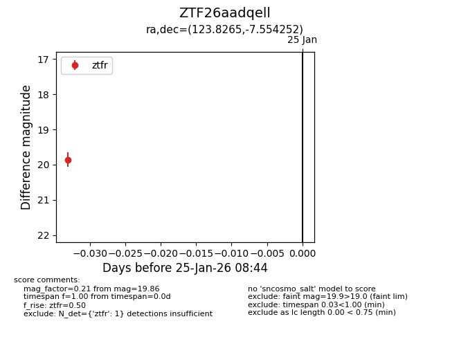
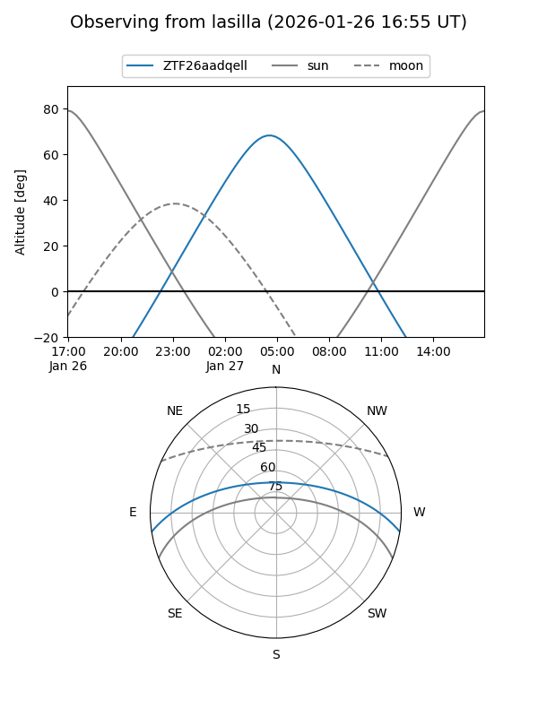
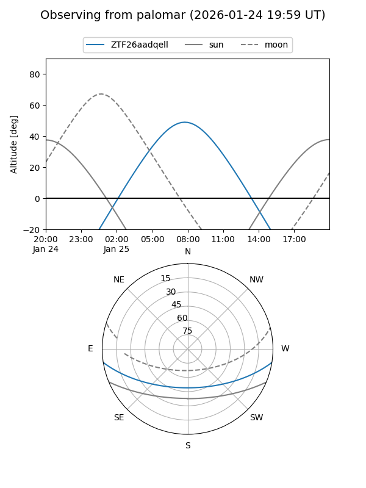

ZTF26aadqell
Target ZTF26aadqell at 2026-01-27 08:46
Aliases and brokers:
FINK: link
Lasair: link
ALeRCE: link
alt names
ZTF26aadqell (ztf,fink_ztf)
Coordinates:
equatorial (ra, dec) = 123.8265,-7.55425
equatorial (HMS+DMS) = 08:15:18.35,-07:33:15.31
galactic (l, b) = (229.6905,+14.81829)
Flags:
Photometry:
last ztfg=19.12, ztfr=19.86
1 ztfg, 1 ztfr detections
Lightcurve

Visibility


Additional plots